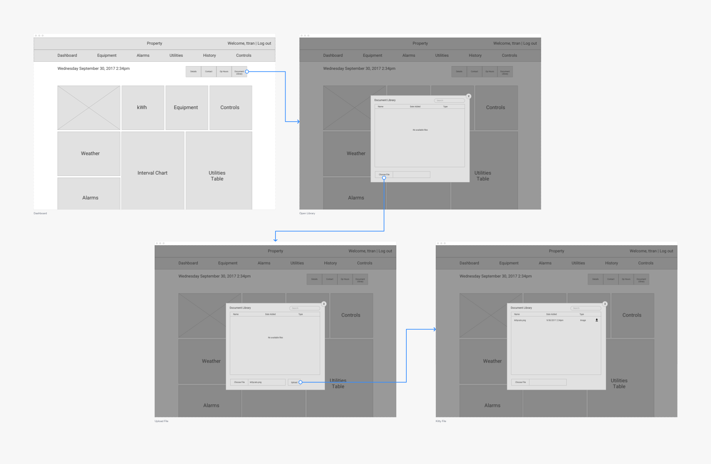
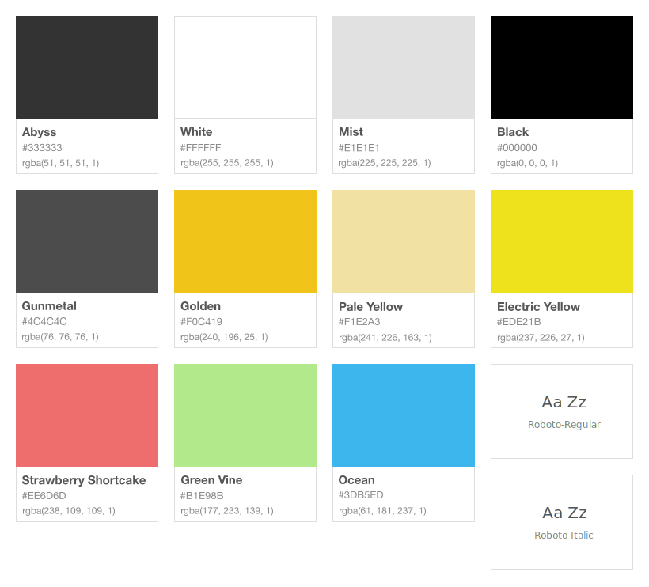
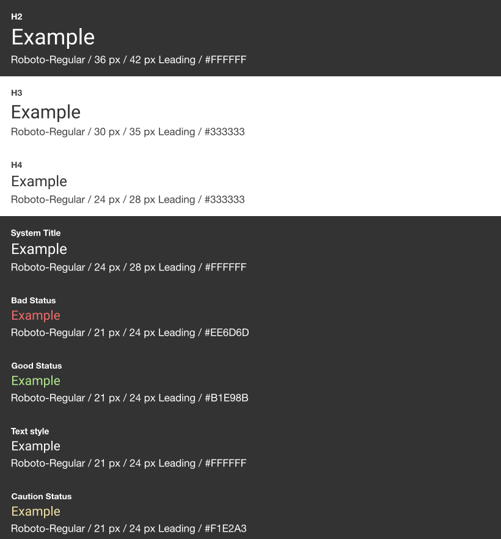
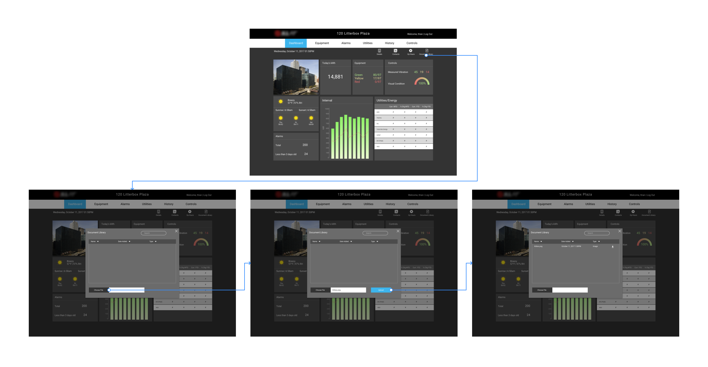
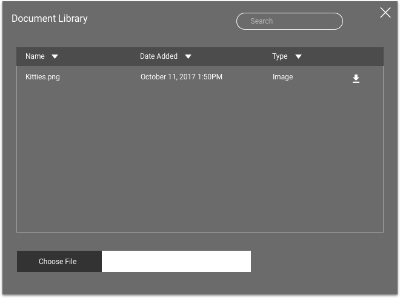
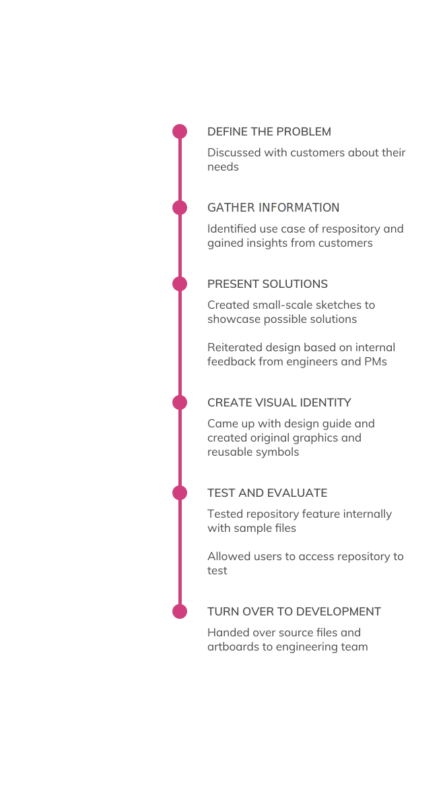
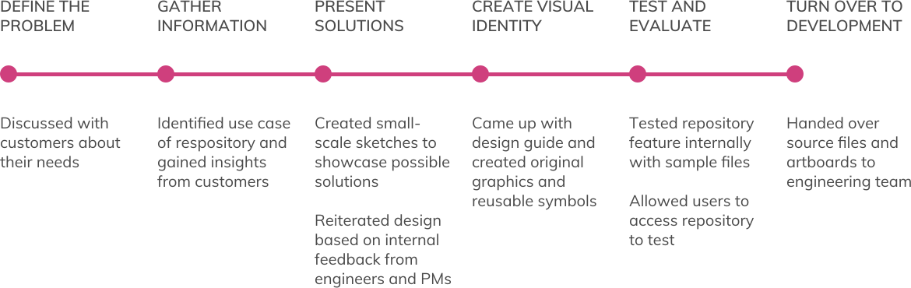

Real Estate IoT Web App
Visual Design | UX Design | Desktop

About Controlco
Controlco integrates systems for centralized building automation controls. They are a B2B company specializing in IoT products that lets users see trending data and operate their facilities. These products are in-browser applications where users can log in to access their building's innerworkings. Controlco serves corporations that own malls, high-rises, and data centers.
Project Overview
A real estate client wanted a way to manage the operations of their facilities. They also needed a feature where they can add files into a repository to share amongst other personnel. We had just begun integrating their data into our cloud, but the client wanted us to start working on building the interface. Unlike the other projects I've done at Controlco, this one didn't have the requirements fleshed out. Instead, we were given a very simple concept that was drawn up by the client team.
Initial Brainstorm and Requirements
The project kicked off with a meeting with the clients as well as the data modelers from our company. We gathered up requirements and brainstormed some ideas on how they wanted the interface designed. The end deliverable for this project would be a functional dashboard. Since we didn't have all the data integrated, we agreed to focus on just the homepage therefore I didn't need to set up a sitemap. The partial requirements included:
- Dashboard homepage that will be an overview of systems
- Imagery that will help users know which building they're on
- Functionality where users can download and upload files
- Set of secondary navigation menu on homepage for building information, operational hours, contact list, as well as document repository
Using the client's mockup, I came up with wireframes to showcase the architecture and flow. The repository functionality was the most important, so I designed for that specific use case.
Simple mockup of the homepage and repository feature
We held an internal review with the engineers and data modelers to see if the design was feasible. This was the first time that we've introduced this feature, as none of our other clients needed this functionality. These artboards were also shown to the clients to obtain feedback throughout the process.
The next step was to craft a design system for this template. The client gave me details about what colors they wanted the dashboard to be. After showcasing some combinations of typography and color guides, we were able to compromise on a palette of greys, as well as the conventional status colors.
 Different text styles used for copy
Testing
Instead of using InVision to build out a clickable prototype, we went ahead and used DGLux5 to build a fully responsive and interactive platform. We tested the feature internally, and then allowed the client to access via public link. We successfully created a new feature that could be used for other projects.
To ensure that the design was scalable, we implemented a search feature, a vertical scroll, and sorting carets. If clients are adding a lot of documents to the repository, these features will help them find specific files.
The upload CTA appears only after a user chooses a file
Users will be able to download any file from the document library onto their local desktop
The upload CTA appears only after a user chooses a file
Users will be able to download any file from the document library onto their local desktop
Process
 Results
This was my last contribution to Controlco, although it was still in the works when I left. I built a modular symbol library in DGLux5 for anyone to come in and pick up where I left off. Along with the source files, there was proper documentation and design guides to help finish the product once the data starts coming in.
Internally, we were happy that we got the opportunity to craft a new feature that we can start using for other projects. I felt that I built a pretty robust system to get the product started. The client really liked the platform that we built for them, and as a result, wanted to contract us for several other facilities in their portfolio.